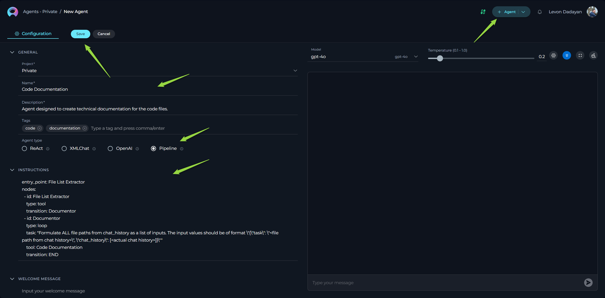

Pipeline Agent Framework User Guide for ELITEA
Welcome to the Pipeline Agent Framework guide for ELITEA! This guide will help you understand how to create your own intelligent agents within ELITEA, even if you don't have a background in coding. Think of these agents as helpful assistants that can guide users through tasks, answer questions, and automate processes. The Pipeline Agent Framework is specifically designed for creating the instructions that your agents will follow. Pipeline Agents are based on the LangChain backend and work with Azure OpenAI Service integrations.
Pipeline agents are designed for orchestrating the work of various entities together like prompts, agents, and datasources. This agent type must be selected when you are writing instructions for so-called 'master' agents.
What is the Pipeline Agent Framework?
Imagine you're building a process step-by-step. The Pipeline Agent Framework allows you to define these steps and how they connect in a clear and organized way. It's like creating a flowchart for your AI agent. You define individual actions (like asking a question or using a tool) and then connect them to create a smooth flow.
This framework uses a simple configuration language YAML to define how your agent works. YAML is designed to be easy to read and understand, making it perfect for describing the steps your agent will take. You'll write instructions in YAML that tell ELITEA how your agent should behave.
Core Concepts: The Building Blocks of Your Pipeline Agent
Let's understand the key parts that make up your intelligent agent:
- State: Represents the agent's memory defined by user, storing information gathered and used throughout its execution.
- The state allows the agent to retain context and use previously acquired information in subsequent steps.
- It can include default information like messages (conversation history) and custom data defined by the user.
- Entry Point: Specifies the starting node of the agent's execution, defining where the agent begins its workflow.
- This is the initial step from which the agent's journey begins.
- Interruptions: Provide mechanisms to pause the agent's execution at specific points, allowing for user intervention or inspection.
- Interruptions can be set to occur before or after a particular node's execution.
- Nodes: The fundamental building blocks representing individual actions or steps the agent can take.
- These are the verbs of your agent's workflow, defining what the agent does at each stage.
- Different node types allow for various actions, such as interacting with the user, calling external tools, or performing specific functions.
- Transitions: Define the flow and connections between nodes, dictating the sequence of actions the agent follows.
- Transitions specify which node the agent should move to after completing the current node's task.
- They create the directed path through the agent's workflow.
- Conditions: Allow for conditional transitions between nodes, where the next step depends on whether a specific rule or condition is met.
- Conditions introduce logic into the agent's workflow, enabling it to react differently based on data or user input.
- Decisions: Enable the agent to make choices and branch its execution path based on available information or the outcome of a node.
- Decision points allow for more dynamic and intelligent agent behavior.
- The agent can evaluate different conditions and select the appropriate next step.
State
The state is the agent's memory, defined by you, the user. It stores information that the agent gathers and uses throughout its execution. The default state includes messages (the conversation history). You can also define custom states to store other relevant information.
Data types for custom states: str, int, list, dict
Important Note about Agent Memory (State):
When you define the state for your Pipeline Agent, you'll encounter two important terms related to user input and conversation history: input and messages. It's crucial to understand the difference between them:
input- The Latest User Message: Think ofinputas the agent's short-term memory of what the user just said or entered. It always holds the most recent message from the user. If the user types something new, the value ofinputis updated to reflect that new message.messages- The Entire Conversation History:messages, on the other hand, is like the agent's long-term memory of the entire conversation. It's a list that keeps track of every message exchanged between the user and the agent from the beginning of the interaction. This includes both the user's messages and the agent's responses.messages: list- Always Include in Custom State: If you define astatesection in your agent's YAML instructions, you must always includemessages: listwithin it. This is essential for your agent to properly track and maintain the conversation history. Withoutmessages: listin your customstate, the agent will not be able to remember the ongoing conversation, which is crucial for most interactive agents. If you don't need to define any other custom state variables, you can simply omit the entirestatesection, and the agent will automatically use the defaultmessagesstate.
Example 1: State Definition
state:
jira_project_id: str
epic_id: str
us_title: str
description: str
input: str
messages: list
filtered_sumarized_info: str
draft_us: str
info_from_datasource: str
enhanced_us: str
Explanation:
This state definition indicates that the agent will store information related to:
jira_project_id: Jira project ID (string)epic_id: Epic ID (string)us_title: User story title (string)description: User story description (string)input: The latest user input (string)messages: The entire conversation history as a list of messages (list)filtered_sumarized_info: Summarized information (string)draft_us: Draft user story (string)info_from_datasource: Information from a data source (string)enhanced_us: Enhanced user story (string)
Note: If you only need the default messages state, you can omit the state section entirely from your YAML instructions.
Entry Point
The entry_point is defined at the top level of your YAML instructions and specifies the id of the first node that will be executed when the agent starts. This node serves as the starting point of your agent's workflow and the beginning of its journey.
Important Note: The entry_point can be any type of node, including llm, function, tool, loop, or loop_tool, depending on the desired starting behavior of your agent.
Example 1: llm node as Entry Point
entry_point: Conversation Partner
nodes:
- id: Conversation Partner
type: llm
input: [input]
prompt:
type: string
value: |
Hello! I am your User Story creation assistant.
To get started, please tell me the Jira Project ID for your user story.
output: [jira_project_id]
transition: Get Epic ID # Define the next step after this node
# ... rest of your agent's instructions ...
Explanation:
This entry_point: Conversation Partner definition tells the agent to start its execution from the llm node with the id "Conversation Partner". The YAML code snippet also shows the definition of the "Conversation Partner" node itself. As the first node, it's an llm type, designed to initiate the conversation by greeting the user and asking for the Jira Project ID.
Example 2: function node as Entry Point
entry_point: Data Initialization
nodes:
- id: Data Initialization
type: function
output: [current_date, system_version]
input_mapping:
# Assuming 'get_system_info' is a function that returns date and version
function_call:
type: fixed
value: get_system_info
transition: Main Workflow # Define the next step after this node
# ... rest of your agent's instructions ...
Explanation:
In this example, entry_point: Data Initialization sets the starting node to be a function node named "Data Initialization". This node, defined as a function type, is designed to perform an initial setup task. Here, it's configured to call a hypothetical function get_system_info (via input_mapping) to retrieve the current date and system version and store them in the state as current_date and system_version. The agent then transitions to the "Main Workflow" node to begin the core logic.
Example 3: loop node as Entry Point
entry_point: Process Files
nodes:
- id: Process Files
type: loop
task: "Generate a list of file paths from a predefined list: file1.txt, file2.txt, file3.txt. Format each as input: {\"file_path\": \"<file_path>\"}"
tool: FileProcessor # Assuming 'FileProcessor' is an agent or prompt to process files
transition: END # End after processing all files
# ... rest of your agent's instructions ...
Explanation:
Here, entry_point: Process Files designates a loop node named "Process Files" as the starting point. This example demonstrates starting the agent execution directly with a loop. The loop node is set up to process a predefined list of files. The task instruction defines how to create input for each file, and the tool: FileProcessor will be executed for each file in the list. After processing all files in the loop, the agent transitions to END, completing its execution.
Note: These examples illustrate that the entry_point provides flexibility in defining how your Pipeline Agent begins its execution, allowing you to start with user interaction (llm), initial data processing (function), or even directly with a looping mechanism (loop).
Interruptions
Interruptions are optional attributes you can add at the top level of your YAML file to pause the agent's execution and give control back to the user at specific points during its workflow. This allows for manual review, adjustments, or user-driven decision-making within an automated agent process.
You can define two types of interruptions:
interrupt_before: Pauses the agent's execution immediately before a specific node is executed. This is useful when you want to review the inputs or confirm the action before the agent proceeds with a particular step.interrupt_after: Pauses the agent's execution immediately after a specific node has finished executing. This is helpful for reviewing the output of a node, providing feedback, or making decisions based on the results of that step before the agent continues to the next node.
Key Features of Interruptions:
- Multiple Interruptions Allowed: You can define multiple
interrupt_beforeandinterrupt_afterpoints within a single agent. This allows for fine-grained control and review at various stages of a complex workflow. - Combined Interrupt Types: You can even use both
interrupt_beforeandinterrupt_afterinterruptions within the same agent. This provides maximum flexibility in designing review and control points in your agent's execution.
Important Note: When you use interrupt_before or interrupt_after in your agent's instructions, it is crucial to ensure that your agent's logic still includes a clear path to the END node. This ensures that even with manual interruptions, the agent's execution can be logically completed and doesn't get stuck in a paused state indefinitely.
Example 1: interrupt_before - Review before Content Aggregation
entry_point: Conversation Partner
interrupt_before: # Define interruptions at the top level
- Unified Content Aggregator # Interrupt BEFORE 'Unified Content Aggregator' node
nodes: # Node definitions
- id: Conversation Partner
type: llm
# ... (rest of Conversation Partner node definition)
transition: Unified Content Aggregator
- id: Unified Content Aggregator # Interruption will occur BEFORE this node starts
type: function
# ... (rest of Unified Content Aggregator node definition)
transition: Draft User Story Creator
# ... rest of your agent's instructions ...
Explanation:
In this example, interrupt_before: - Unified Content Aggregator is defined at the top level. This means that before the agent starts executing the Unified Content Aggregator node (identified by id: Unified Content Aggregator within the nodes section), the execution will pause, and control will be given back to the user. The user can then review the current state of the agent, potentially make adjustments, and then manually resume the agent's execution.
Example 2: interrupt_after - Review User Feedback
entry_point: Conversation Partner
interrupt_after: # Define interruptions at the top level
- Conversation Partner # Interrupt AFTER 'Conversation Partner' node
nodes: # Node definitions
- id: Conversation Partner # Interruption will occur AFTER this node finishes
type: llm
# ... (rest of Conversation Partner node definition)
transition: Unified Content Aggregator
- id: Unified Content Aggregator
type: function
# ... (rest of Unified Content Aggregator node definition)
transition: Draft User Story Creator
# ... rest of your agent's instructions ...
Explanation:
Here, interrupt_after: - Conversation Partner is defined. This will cause the agent to pause immediately after it has finished executing the Conversation Partner node. After the "Conversation Partner" node completes its task (likely interacting with the user), the agent will pause, allowing the user to review the interaction, the agent's response, and the updated state before the agent proceeds to the "Unified Content Aggregator" node.
Example 3: Using Both interrupt_before and interrupt_after
entry_point: Conversation Partner
interrupt_before: # Define 'interrupt_before'
- User Story Publisher # Interrupt BEFORE 'User Story Publisher'
interrupt_after: # Define 'interrupt_after'
- User Feedback and Approval # Interrupt AFTER 'User Feedback and Approval'
nodes: # Node definitions
- id: Conversation Partner
type: llm
# ... (rest of Conversation Partner node definition)
transition: User Feedback and Approval
- id: User Feedback and Approval # Interruption will occur AFTER this node finishes
type: llm
# ... (rest of User Feedback and Approval node definition)
transition: User Story Publisher
- id: User Story Publisher # Interruption will occur BEFORE this node starts
type: function
# ... (rest of User Story Publisher node definition)
transition: END
Explanation:
This example demonstrates using both types of interruptions in a single agent.
interrupt_after: - User Feedback and Approval: The agent will pause after the "User Feedback and Approval" node, allowing review of user feedback and the enhanced user story.interrupt_before: - User Story Publisher: The agent will pause before the "User Story Publisher" node, allowing a final check before the user story is published to Jira.
By strategically placing interrupt_before and interrupt_after points, you can create Pipeline Agents that offer a balance between automation and user control, ensuring critical steps are reviewed and validated as needed.
Nodes
Nodes are the individual actions or steps your agent can take. Each node performs a specific task. Think of them as verbs – what your agent does. The following Node types are available:
- llm: Enables the agent to interact with users using natural language, powered by AI models.
- Used for asking questions, providing information, and engaging in conversational exchanges.
- tool: Allows the agent to utilize pre-built entities (prompts, agents and datasources) in ELITEA.
- Facilitates actions like retrieving data, triggering other agents, or using specific prompts and datasources.
- function: Provides a mechanism for the agent to directly call and execute specific ELITEA functionalities with precise control over input mapping.
- Offers a more advanced and potentially efficient way to interact with ELITEA's internal capabilities.
- loop: Enables the agent to repeatedly execute a specific task or action, often iterating over a list of items or until a condition is met.
- Useful for processing collections of data or performing repetitive operations.
- loop_tool: Allows the agent to iterate through a list of inputs generated by another ELITEA agent, executing a specified tool or function for each item.
- Facilitates workflows where the input for a repetitive task is dynamically generated by another entity.
Common Node Attributes
Nodes have the following common attributes:
id: A unique name for this specific step. This helps you refer to this node later in your instructions for transitions, conditions, or decisions.type: Specifies the kind of action this node will perform (e.g.,llm,tool,function,loop,loop_tool).input(optional): A list of information the node needs to perform its task. This information is retrieved from the agent'sstate.output(optional): A list of names for the information the node produces after completing its task. This information is then stored back in the agent'sstateand can be used by subsequent nodes.transition: Specifies theidof the next node the agent should move to after this node is finished. If the value isEND, the agent's execution will stop, logically completing the agent's workflow.condition(optional): Allows the agent to conditionally transition to different nodes based on specific rules defined using Jinja2 templating.decision(optional): Allows the agent to choose the next node from a predefined list based on available information or the result of the current node's action.
Node types in Detail
Here are the different types of nodes you can use to build your agent, with detailed explanations and examples:
Node type: llm
The llm node allows your agent to communicate with the user using the power of Large Language Models (LLMs). You provide a prompt (a question or instruction), and the LLM generates a response.
Purpose: To engage in natural language interactions with the user, such as:
- Asking questions to gather information.
- Providing information or explanations.
- Getting user feedback or approval.
Common Attributes for llm Nodes:
id: A unique name for thisllmnode (e.g.,Conversation Partner,User Feedback).type: Always set this tollm.prompt: Defines the instruction or question for the LLM.type: Specifies the format of the prompt. Must be eitherstringorfstring.string: A simple text prompt without any variables.fstring: A formatted string prompt that includes variables from the agent'sstatewithin the instructions.
value: The actual text of the question or instruction. Use|to define multiline prompts.
input(optional): A list of state variables that thepromptmight need.- For Entry Point
llmNodes: If thisllmnode is theentry_pointof your agent,input: [input]is valid and refers to the initial user input. - For Subsequent
llmNodes:inputcan include any state variables that have been populated asoutputvariables in previous nodes (e.g.,input: [input1, input2, messages]). If usingfstringprompts,inputbecomes mandatory to list the variables used in the prompt.
- For Entry Point
output(optional): A list of names for the information you expect to extract from the LLM's response. This information will be stored back in the agent'sstateand can be used by subsequent nodes. Example:output: [description, jira_project_id, epic_id, us_title]structured_output(optional): Set totrueif you expect the LLM's response to be in a structured format (like JSON) that makes it easier to extract theoutputvalues. Defaults tofalse. The effectiveness ofstructured_output: truedepends on the capabilities of the selected LLM model.messages: This attribute is implicitly managed by the framework and represents the 'chat_history'. You don't need to define it explicitly ininputoroutputunless you want to explicitly pass the entire chat history as input to the prompt for context.
Example 1: llm node - Simple Text Prompt
- id: Conversation Partner
type: llm
input: [input] # Optional, but included here as the prompt refers to user input (entry point node)
prompt:
type: string
value: |
To create a new User Story, I need some information from you. Could you please provide the
following details in the specified format?
- **Jira Project ID**: (e.g., PLAN)
- **EPIC ID**: (e.g., PLAN-128)
- **Title**: (e.g., Checkout functionality)
- **Description**: (e.g., "The informative description of future US.")
Once you provide this information, I will ask for your approval (should be 'approved' word) to start the User Story creation process. Make your instructions to user highlighted by using markdown highlight for text.
output: [description, jira_project_id, epic_id, us_title]
structured_output: true
transition: Confluence Extractor # Define the next step here
Explanation:
id: Conversation Partner: Names this node "Conversation Partner".type: llm: Specifies that this is anllmnode.input: [input]: Takes the user's initial input as input to the prompt (valid for entry point node).prompt:type: string: Indicates a simple text prompt.value: The actual instruction for the LLM, asking the user for user story details.
output: [description, jira_project_id, epic_id, us_title]: Specifies that the agent expects to extract these pieces of information from the user's response and store them in thestate.structured_output: true: Indicates that the agent expects a structured response to facilitate information extraction.
Example 2: llm node - Parametrized Prompt (fstring)
- id: User Feedback and Approval
type: llm
input: [input, enhanced_us, info_from_datasource] # Mandatory because of fstring prompt
output: [enhanced_us] # Mandatory because of fstring prompt
prompt:
type: fstring
value: |
When reviewing and updating a user story, ensure its structure and format remain consistent with the original, unless the user specifically requests changes. Present the updated user story in its entirety, enriched with any necessary information, clearly and concisely for user feedback. Use the following variables to guide the process:
- **Current User Input:** {input}
- **Information from Data Source:** {info_from_datasource}
- **Enhanced User Story:** {enhanced_us}
Users can provide feedback through free form queries, which will be controlled by the "Current User Input" value. If the query contains "datasource:", access and incorporate specific data from the identified sources into the enhanced user story via "Information from Data Source". Present the full "Enhanced User Story" to the user, ensuring that the structure and format remain unchanged.
Approval of the enhanced user story can be given by typing "approved," which will publish it to Jira. If no further changes or publication is desired, the user can type "finish" to conclude the session.
transition: User Story Publisher # Define the next step here
Explanation:
id: User Feedback and Approval: Names this node "User Feedback and Approval".type: llm: Specifies that this is anllmnode.input: [input, enhanced_us, info_from_datasource]: Mandatory because the prompt is anfstringand uses these variables. It takes the user's current input, the enhanced user story, and information from a data source from the agent'sstate.prompt:type: fstring: Indicates a formatted string prompt using variables.value: The instruction for the LLM, using placeholders like{input},{info_from_datasource}, and{enhanced_us}to insert values from the agent'sstate.
output: [enhanced_us]: Mandatory because the prompt is anfstring. Specifies that the agent expects the LLM to potentially modify or confirm theenhanced_us.
Node type: tool
The tool node allows your agent to utilize pre-built entities within ELITEA, specifically: prompts, agents, and datasources. The tool node is a simpler way to use these entities compared to the function node, but it might be less efficient in terms of token usage and expensive.
Purpose: To leverage existing ELITEA entities to perform specific tasks, such as:
- Executing a pre-defined prompt.
- Triggering another ELITEA agent.
- Querying a datasource to retrieve information.
Common Attributes for tool nodes:
id: A unique name for thistoolnode (e.g.,Draft User Story Creator,Data Retriever).type: Always set this totool.tool: The name of the specific ELITEA entity (prompt, agent, or datasource) you want to use.input(optional): A list of state variables that might be used as input for the tool.output(optional): A list of names for the information expected as output from the tool.structured_output(optional): Indicates if the tool's output is expected to be structured. Defaults tofalse.transition: Theidof the next node to execute after the tool finishes.
Example 1: tool node - Using a Prompt
- id: Draft User Story Creator
type: tool
tool: User Story Draft Prompt # Assuming 'User Story Draft Prompt' is a defined prompt in ELITEA
transition: User Story Enhance Aggregator
Explanation:
id: Draft User Story Creator: Names this node "Draft User Story Creator".type: tool: Specifies that this is atoolnode.tool: User Story Draft Prompt: Specifies that this node will use the ELITEA prompt named "User Story Draft Prompt".transition: User Story Enhance Aggregator: Defines the next node to be "User Story Enhance Aggregator".
Important Note: When using a tool node, the framework will use an LLM in the background to prepare the input data for the specified tool. This can increase token usage and potentially make the execution slower compared to using a function node with explicit input mapping.
Node type: function
The function node provides a more advanced and efficient way to interact with ELITEA entities (prompts, agents, datasources, and other functionalities). It allows you to directly call and execute specific ELITEA functionalities, but requires you to explicitly define how the inputs for that functionality are prepared using input_mapping. This explicit control over input mapping can lead to better token efficiency and faster execution compared to the tool node.
Purpose: To directly utilize specific ELITEA functionalities with precise control over input preparation.
Common Attributes for function nodes:
id: A unique name for thisfunctionnode (e.g.,Summarize User Story,Publish to Jira).type: Always set this tofunction.input: A list of state variables that will be used to prepare the input for the ELITEA entity. This is mandatory.output: A list of names for the information that will be returned by the ELITEA entity. This is mandatory.-
input_mapping: Defines how theinputvariables from the agent'sstateare mapped to the input parameters of the ELITEA entity being called.- For Agent as Function: If calling an ELITEA agent as a function node,
input_mappingtypically includes:input_mapping:task: # 'task' is a common input parameter for agentstype:# variable, fstring, string, fixed value:# state variable, formatted string, text, constant value chat_history: # 'chat_history' is another common input parameter for agentstype:# variable, fixed value:# 'messages' state variable, [] for empty history task: Represents the main instruction or task for the agent being called.type: string: Provides instructions directly as a string without using state variables.type: fstring: Provides parametrized instructions using variables from the agent'sstate.type: variable: Uses the value of a state variable as the task instruction.type: fixed: Uses a constant, hardcoded value as the task instruction.
chat_history: Defines how chat history is passed to the agent being called.type: fixed:value: []- Passes an empty chat history, effectively starting a new conversation with the child agent.type: variable:value: messages- Passes the entire current chat history to the child agent.
- For Prompt as Function: If calling an ELITEA prompt as a function node,
input_mappingmight look like:yaml input_mapping: input: # 'input' is a common input parameter for prompts (for prompts without variables) type: variable value: <state_variable_name> # The state variable containing the input for the prompt variable_name: # 'variable_name' - Use this if the prompt has variables, replace 'variable_name' with the actual variable name in the prompt type: variable value: <state_variable_name> # The state variable providing value for the prompt's variableinput: Used when calling a prompt that doesn't use variables in its instructions.type: variable: Uses a state variable as input to the prompt.
variable_name: Used when calling a prompt that does use variables in its instructions. Replacevariable_namewith the actual name of the variable used in the prompt.type: variable: Uses a state variable to provide the value for the prompt's variable.type: fixed: Uses a fixed, constant value for the prompt's variable. Useful when a variable's value is not crucial and can be a default value (e.g., "n/a").
-
For Datasource as Function: If calling an ELITEA datasource as a function node,
input_mappingtypically includes:yaml input_mapping: query: # 'query' is a common input parameter for datasources type: <type> # variable, string, fstring, fixed value: <value> # state variable, formatted query string, query text, constant queryquery: Defines the query to be executed against the datasource.type: variable: Uses a state variable as the query.type: string: Provides the query directly as a string.type: fstring: Creates a dynamic query using variables from the agent'sstate.type: fixed: Uses a constant, hardcoded query.
Important Note: When using a datasource as a function node, remember to specify the correct
toolname in your YAML instructions. Use[ToolNamewithoutspacesPredict]for prediction datasources and[ToolNamewithoutspacesSearch]for search datasources (replaceToolNamewithoutspaceswith the actual tool name without spaces).
- For Agent as Function: If calling an ELITEA agent as a function node,
-
transition: Theidof the next node to execute after the function call.
Example 1: function node - Calling an Agent (variable input mapping)
- id: Draft User Story Creator
type: function
input: [filtered_sumarized_info]
output: [draft_us]
input_mapping:
task: # Input mapping for 'task' parameter of the agent
type: variable
value: filtered_sumarized_info # Use 'filtered_sumarized_info' state variable as task
transition: User Story Enhance Aggregator
Explanation:
input_mapping: task: Maps the input for thetaskparameter of the agent being called.type: variable: Specifies that the value fortaskwill be taken from a state variable.value: filtered_sumarized_info: Indicates that the value of thefiltered_sumarized_infostate variable will be used as thetask.
Example 2: function node - Calling an Agent (fstring input mapping)
- id: User Story Enhance Aggregator
input: [draft_us]
output: [enhanced_us]
input_mapping:
task: # Input mapping for 'task' parameter of the agent
type: fstring
value: |
Enhance the Narrative, Description and Scenarios with AC's for the given draft User Story: {draft_us} # Formatted task instruction
chat_history: # Input mapping for 'chat_history' parameter of the agent
type: fixed
value: [] # Use empty chat history
type: function
transition: User Feedback and Approval
Explanation:
input_mapping: task: Maps the input for thetaskparameter of the agent being called.type: fstring: Specifies that the value fortaskwill be created using a formatted string.value: Defines the formatted string instruction, including the{draft_us}variable from the agent'sstate.
input_mapping: chat_history: Maps the input for thechat_historyparameter.type: fixed: Specifies a fixed value forchat_history.value: []: Sets thechat_historyto an empty list, meaning the child agent will start with no prior conversation history.
Node type: loop
The loop node allows you to execute a specific task repeatedly, creating a loop within your agent's workflow. You define instructions on how to create the input for each iteration of the loop.
Purpose: To perform the same action multiple times, typically for each item in a list or until a certain condition is met. Useful for:
- Processing a list of items (e.g., files, user stories).
- Repeating an action until a desired outcome is achieved.
Common Attributes for loop nodes:
id: A unique name for thisloopnode (e.g.,Documentor,Process User Stories).type: Always set this toloop.task: (Mandatory) Instructions on how to formulate the input for each iteration of the loop. This is usually a text instruction that tells the agent how to extract or create input data from the currentstateorchat_history.tool: The name of the ELITEA entity (agent, prompt, or other tool) that will be executed in each iteration of the loop. Recommendation: Use an ELITEA agent as thetoolfor more complex loop logic.input(optional): A list of state variables that might be used as input for thellmnode (if an LLM is used internally to prepare loop inputs based on thetaskinstruction). Providinginputcan be more token-efficient than relying solely onchat_history.output(optional): A list of names for the information produced by the entireloopnode after all iterations are complete. If you want to collect and use the results of all loop iterations in subsequent nodes, defineoutput.transition: Theidof the next node to execute after the loop finishes all iterations.
Example 1: loop node - Documenting Code Files
- id: Documentor
type: loop
task: "Formulate ALL file paths from chat_history as a list of inputs."
tool: Code Documentation # Assuming 'Code Documentation' is a defined prompt or agent in ELITEA
transition: END
Explanation:
task: Provides instructions to the agent on how to create input for each loop iteration. In this case, it instructs the agent to:- Extract all file paths mentioned in the
chat_history. - Format each file path into a dictionary with keys
"task"(containing the file path) and"chat_history"(containing the entirechat_history).
- Extract all file paths mentioned in the
tool: Code Documentation: Specifies that in each iteration of the loop, the ELITEA entity named "Code Documentation" will be executed. This could be an agent or a prompt designed to generate documentation for a given file path.
Node type: loop_tool
The loop_tool node is a more advanced loop type that gets the list of inputs for the loop from the output of another ELITEA entity (typically an agent). This is useful when you need to dynamically generate the items to be processed in the loop.
Purpose: To iterate through a list of items generated by another ELITEA entity and perform a specific action on each item.
Common Attributes for loop_tool nodes:
id: A unique name for thisloop_toolnode (e.g.,Process Pages,Generate Documentation).type: Always set this toloop_tool.tool: The name of the ELITEA entity (agent, prompt, or datasource) that will be executed first to generate the list of inputs for the loop.loop_tool: The name of the ELITEA entity (agent, prompt, or other tool) that will be executed for each item in the list generated by thetool. Recommendation: Use an ELITEA agent as theloop_toolfor more complex processing within the loop.variables_mapping: (Mandatory) Defines how to map the variables from theoutputof thetool(which generates the input list) to the required input parameters of theloop_tool(which processes each item in the list).- For Agent
loop_tool: If theloop_toolis an agent,variables_mappingtypically includes mapping totaskandchat_historyinput parameters of the agent. - For Other
loop_toolTypes: If theloop_toolis a prompt or another type of tool, you need to map the output variables of thetoolto the input parameters expected by the specificloop_tool. Refer to the documentation of theloop_toolto understand its required input parameters.
- For Agent
input(optional): A list of state variables that might be needed as input for thetool(the entity that generates the input list).output(optional): A list of names for the information produced by theloop_toolin each iteration.structured_output(optional): Indicates whether the output of theloop_toolis expected to be structured. Defaults tofalse.
Example 1: loop_tool node - Processing Confluence Pages
- id: listpages
type: loop_tool
tool: list_pages_with_label # Assuming 'list_pages_with_label' is a Confluence toolkit's tool that returns a list of pages
structured_output: true # Expect structured output from 'list_pages_with_label'
loop_tool: Confluence helper # Assuming 'Confluence helper' is an ELITEA agent to process each Confluence page
variables_mapping:
id: task # Map 'id' output variable from 'list_pages_with_label' to 'task' input of 'Confluence helper'
messages: chat_history # Map 'messages' (likely page content) to 'chat_history' input of 'Confluence helper'
transition: END
Example 2: loop_tool node - Documenting Files from Directory
- id: Documentor
type: loop_tool
tool: alita-sdk_get_files_from_directory # Assuming 'get_files_from_directory' is an GitHub tolkit's tool to get files from a 'alita-sdk' github repositary
variables_mapping:
file_path: task # Map 'file_path' output variable from 'alita-sdk_get_files_from_directory' to 'task' input of 'Code Documentation'
messages: chat_history # Map 'messages' to 'chat_history' input of 'Code Documentation'
structured_output: true # Expect structured output from 'alita-sdk_get_files_from_directory'
loop_tool: Code Documentation # Assuming 'Code Documentation' is an ELITEA agent to document each file
transition: END
Transitions
Transitions are the connections that define how your agent moves from one node to the next, establishing the sequential flow of its workflow. They dictate the order in which your agent performs actions.
Within each node definition in your YAML instructions, the transition attribute is used to specify what happens after the current node finishes its execution. You use the transition attribute to tell the agent which node to go to next or to end the agent's execution.
There are two primary ways to use the transition attribute:
transition: <node_id>: This is used to move the agent's execution to another node within your pipeline. You replace<node_id>with theidof the node you want the agent to execute next. This creates a link in your workflow, connecting one step to another.transition: END: This special value signifies the logical end of your agent's workflow. When a node'stransitionis set toEND, it indicates that after this node completes, the agent's execution should stop gracefully. It is crucial to ensure that all logical paths in your agent's instructions eventually lead to a node withtransition: ENDto prevent unexpected behavior or potential issues with chat history management.
Example 1: Transitioning between llm and function nodes
nodes:
- id: Get User Input # Define an 'llm' node to get user input
type: llm
prompt:
type: string
value: "Please enter the Epic ID for the User Story you want to create."
output: [epic_id]
transition: Extract Epic Details # Transition to 'Extract Epic Details' node after getting user input
- id: Extract Epic Details # Define a 'function' node to process the Epic ID
type: function
input: [epic_id]
output: [filtered_epic_info]
input_mapping:
task:
type: fstring
value: "Extract key details for Epic ID: {epic_id}"
chat_history:
type: fixed
value: []
transition: Draft User Story Creator # Transition to 'Draft User Story Creator' node after extracting details
- id: Draft User Story Creator
type: function
# ... (rest of Draft User Story Creator node definition) ...
transition: END # End agent execution after Draft User Story Creator completes
Explanation:
In this example, we see transitions connecting three nodes:
Get User Input(llm node): After the agent gets theepic_idfrom the user, thetransition: Extract Epic Detailsline ensures that the agent will next execute the node with theid"Extract Epic Details".Extract Epic Details(function node): Once the "Extract Epic Details" node finishes processing theepic_id, thetransition: Draft User Story Creatorline directs the agent to the "Draft User Story Creator" node.Draft User Story Creator(function node): Finally, after the "Draft User Story Creator" node completes its task, thetransition: ENDline signals that this is the end of the workflow, and the agent's execution should terminate.
Example 2: Linear Transition with tool node and END
nodes:
- id: Search Datasource # Define a 'tool' node to search a datasource
type: tool
tool: MyDatasourceSearch # Assuming 'MyDatasourceSearch' is a defined datasource tool in ELITEA
input: [user_query]
output: [search_results]
transition: Display Results # Transition to 'Display Results' node after searching
- id: Display Results # Define an 'llm' node to display search results to the user
type: llm
input: [search_results]
prompt:
type: fstring
value: "Here are the search results I found: {search_results}"
transition: END # End agent execution after displaying results
Explanation:
This example demonstrates a simpler linear flow:
Search Datasource(tool node): After thetoolnode, which searches a datasource, completes its search and retrievessearch_results, thetransition: Display Resultsline ensures the agent moves to the "Display Results" node.Display Results(llm node): Once the "Display Results" node has presented thesearch_resultsto the user, thetransition: ENDline is used to terminate the agent's execution, as this is the final step in this particular workflow.
These examples illustrate how the transition attribute is fundamental for defining the sequential flow of actions within your Pipeline Agent, allowing you to create workflows that move from one node to the next in a controlled and logical manner, ultimately leading to the desired END state.
Conditions
The condition attribute allows a node to conditionally transition to different next nodes based on whether a specific rule or condition evaluates to true or false. Conditions are defined using Jinja2 templating language, providing powerful logic capabilities within your agent workflow.
Common Attributes for condition:
condition: Indicates that the transition from this node is conditional.condition_input: (Optional, but strongly recommended) A list of state variables that will be used as input to evaluate the condition. Providingcondition_inputmakes your conditions more readable and efficient by limiting the scope of data Jinja2 needs to access. If omitted, Jinja2 might have access to the entirestateor evenchat_history, potentially increasing processing overhead.condition_definition: (Mandatory) The actual rule or condition to be evaluated, written using Jinja2 templating syntax.
Jinja2 Templating in condition_definition:
- Use
{% if <condition> %}to start a conditional block. - Use
{% elif <condition> %}for "else if" conditions (optional, you can have multipleelifblocks). - Use
{% else %}for the "else" case (optional). - Use
{% endif %}to close the conditional block. - Within the Jinja2 template, you can access state variables listed in
condition_inputor, ifcondition_inputis omitted, potentially access the entirestateormessages. - Use Jinja2 filters like
|lowerto modify data (e.g.,input|lowerconverts user input to lowercase for case-insensitive comparisons).
Example 1: condition within an llm node - User Approval Check
- id: Get User Story Details
type: llm
input: [input]
prompt:
type: string
value: "Please provide the description, Jira Project ID, EPIC ID, and User Story Title."
output: [description, jira_project_id, epic_id, us_title]
structured_output: true
condition:
condition_input: [description, jira_project_id, epic_id, us_title, input] # Input variables for condition
condition_definition: |
{% if 'approved' in input|lower and description and jira_project_id and epic_id and us_title %} # Condition logic using Jinja2
Unified Content Aggregator # Node to transition to if condition is true
{% else %}
Conversation Partner # Node to transition to if condition is false
{% endif %}
Explanation:
condition_input: [description, jira_project_id, epic_id, us_title, input]: Specifies that these state variables will be used in the condition evaluation.condition_definition: Defines the condition using Jinja2:{% if 'approved' in input|lower and description and jira_project_id and epic_id and us_title %}: Checks if the user'sinput(converted to lowercase) contains "approved" AND ifdescription,jira_project_id,epic_id, andus_titlestate variables have values (are not empty).- If the condition is true, the agent transitions to the node with
id: Unified Content Aggregator. {% else %}: If the condition is false.- The agent transitions to the node with
id: Conversation Partner. {% endif %}: Closes the conditional block.
Example 2: condition with elif - Multiple Conditional Branches
condition:
condition_input: [input]
condition_definition: |
{% if 'approved' in input|lower %}
User Story Publisher # Transition to 'User Story Publisher' if user types 'approved'
{% elif 'datasource:' in input|lower %}
Special # Transition to 'Special' if user types 'datasource:'
{% elif 'finish' in input|lower %}
END # Transition to 'END' if user types 'finish'
{% else %}
User Feedback and Approval # Default transition if none of the above conditions are met
{% endif %}
Explanation: This example demonstrates using elif to create multiple conditional branches based on user input. The agent checks for different keywords in the input and transitions to different nodes accordingly.
Decisions
The decision attribute empowers a node to act as a branching point in your agent's workflow. It allows the agent to dynamically choose which node to execute next from a set of predefined options, based on the information it has gathered or the outcome of its current action. This introduces intelligent branching and conditional paths into your agent's behavior, making it more flexible and responsive.
Common Attributes for decision:
decision: This is the main attribute that signals that a node will make a decision about the next step in the workflow. It's a container for the decision-making configuration.nodes: (Mandatory) This is a list ofnode ids representing the possible nodes that the agent can transition to from this decision point. These are the potential "next steps" the agent can take. You must list at least one node ID here.description: (Optional) A brief textual explanation of the decision being made at this point. This is purely for documentation purposes and helps in understanding the agent's logic, especially in complex workflows. It's good practice to include adescriptionfor clarity.decisional_inputs: (Optional, but strongly recommended) A list ofstatevariables that will be used as input for the decision-making process. These are the pieces of information the agent will consider when choosing the next node. While technically optional in the YAML structure, providingdecisional_inputsis highly recommended for making your decision logic clear, maintainable, and efficient. It explicitly tells the agent what information to focus on when making the decision.default_output: (Mandatory) Theidof the node to transition to if none of the specific decision conditions are met (or if the decision logic cannot determine a specific next node). This acts as a fallback path, ensuring that the agent always has a direction to proceed, even if the decision criteria are not explicitly satisfied. You must provide a validnode idas thedefault_output.
Example 1: decision within an llm node - Handling User Feedback
- id: User Feedback
type: llm
input: [enhanced_us, input]
prompt:
type: fstring
value: |
Please review the enhanced user story:
---
{enhanced_us}
---
Provide your feedback. Type "Publish" to publish the story, "Edit" to request changes, or "Finish" to end.
output: [user_feedback]
decision:
nodes: ["Publish Story", "Request Clarification", "END", "User Feedback"] # Possible next nodes (including looping back to itself)
description: "Decide next step based on user feedback keywords: Publish, Edit, Finish." # Description of the decision
decisional_inputs: ["input"] # Input for decision making: user's latest input
default_output: "User Feedback" # Default: loop back to 'User Feedback' if input doesn't match keywords
Explanation:
In this enhanced example, the decision attribute is used within the "User Feedback" llm node to determine the agent's next action based on the user's response to the user story review prompt.
nodes: ["Publish Story", "Request Clarification", "END", "User Feedback"]: This list defines the possible nodes the agent can transition to:"Publish Story": To publish the user story."Request Clarification": To ask the user for more details or clarification if they request edits."END": To terminate the agent's execution if the user is finished."User Feedback": Importantly, it also includes the node itself ("User Feedback"). This allows the agent to loop back to the same node if the user's input doesn't clearly indicate one of the other options.
description: "Decide next step based on user feedback keywords: Publish, Edit, Finish.": This provides a human-readable description of the decision logic, stating that the agent will look for keywords in the user's feedback to decide the next step.decisional_inputs: ["input"]: This specifies that the decision will be based on theinputstate variable, which holds the user's latest message (their feedback in this case).default_output: "User Feedback": This is the fallback option. If the agent's decision logic (defined in the background code, not in YAML) cannot clearly determine if the user wants to "Publish", "Edit", or "Finish" based on theirinput, the agent will default to transitioning back to the"User Feedback"node itself. This effectively re-prompts the user for clearer instructions, ensuring the agent doesn't get stuck or proceed incorrectly if the user input is ambiguous.
In summary, the decision attribute provides a powerful mechanism for creating dynamic and intelligent agents that can adapt their workflow based on user input, data analysis, or the outcomes of previous steps. By carefully defining the nodes, decisional_inputs, and default_output, you can build agents that make informed choices and follow branching paths to achieve complex goals.
Creating Your First Pipeline Agent in ELITEA
Ready to build your own agent? Here's a step-by-step instructions to creating a Pipeline Agent in ELITEA:
- Start a New Agent:
- Look for the "+ Agent" button, located in the top right corner of the ELITEA interface. Click this button to begin creating a new agent.
- This action will open the Configuration tab for your new agent, where you'll define its settings and behavior.
- Name and Describe Your Agent:
- In the Configuration tab, you'll see fields for Name and Description.
- Name: Give your agent a clear and descriptive name. This name will help you easily identify your agent in ELITEA. For example, "User Story Creator" or "Code Documentor".
- Description: Write a brief description of what your agent does. This helps you and others understand the agent's purpose at a glance. For example, "Agent to guide users through creating user stories in Jira."
- Add Tags (Optional):
- The Tags input box allows you to categorize your agent using keywords or labels.
- You can either type in a new tag name and press Enter, or select from a list of tags you've used before.
- Tags are helpful for organizing and searching for your agents later, especially if you create many of them.
- Choose the Agent Type:
- Locate the Agent type dropdown menu in the Configuration tab.
- Select "Pipeline" from the dropdown. This tells ELITEA that you want to create a Pipeline Agent, which uses the YAML-based framework we're discussing in this guide.
- Provide YAML Instructions:
- This is the heart of creating a Pipeline Agent! In the Instructions field, you will write the YAML code that defines your agent's workflow.
- Refer to the previous sections of this guide to understand how to write YAML instructions, define nodes, transitions, conditions, and more.
- Important: Make sure your YAML is correctly formatted, especially the indentation. You can use the YAML Indentation Corrector prompt mentioned in the Troubleshooting section if needed.
- Add and Set Up Toolkits:
- Scroll down to the Toolkits section in the agent configuration.
- Toolkits provide your agent with access to various functionalities within ELITEA.
- Click "Add Toolkit" and choose the toolkits your agent needs to perform its tasks. For example, you might need a Jira toolkit to interact with Jira, or a data source toolkit to access external information. Remember to add all agents, datasources and prompts involved in the YAML instructions, as well as other toolkits (if required).
- After adding a toolkit, you may need to configure it. This might involve, selecting correct version of the toolkit (agent, prompt), selecting corresponding tool (datasource) providing API keys, connection details, or other settings specific to the toolkit. Follow the instructions provided for each toolkit you add.
- Configure Conversation Starter and Welcome Message (Optional):
- These optional settings allow you to customize the initial interaction with your agent.
- Conversation Starter: This is a predefined set of questions or prompts that are suggested to the user when they first start a conversation with your agent. It can help guide users on how to interact with the agent.
- Welcome Message: This is a message that your agent automatically sends to the user when a conversation begins. It can be used to greet the user, explain what the agent can do, or provide initial instructions.
- You can configure these in the Conversation Starter and Welcome Message sections of the agent configuration.
- Save Your Agent:
- Once you have filled in the necessary information, provided your YAML instructions, and added toolkits, click the "Save" button (usually located at the bottom or top of the configuration page).
- Saving your agent makes your configuration live and ready to use.

Best Practices and Use Cases
- Start with a clear goal: Define what you want your agent to achieve before you start building.
- Break down complex tasks: Divide large tasks into smaller, manageable nodes.
- Use descriptive node IDs: Choose names that clearly indicate the purpose of each node.
- Plan your transitions carefully: Ensure a logical flow between nodes.
- Test your agent thoroughly: Run your agent through different scenarios to identify and fix any issues.
- Utilize conditions and decisions for dynamic behavior: Make your agent more intelligent by allowing it to adapt based on user input and data.
- Leverage the
functionnode for efficiency: When interacting with ELITEA entities, consider using thefunctionnode for more direct and potentially token-saving interactions. - For Simplicity and Quick Setup, Choose
toolnodes: If you are new to Pipeline Agents or prioritize ease of use and rapid agent creation over advanced configuration and token optimization, thetoolnode is an excellent starting point.toolnodes offer a simpler way to integrate ELITEA entities (prompts, agents, datasources) into your workflow with less configuration, making them ideal for quickly building functional agents, especially for users who are not yet comfortable with the more detailed input mapping required byfunctionnodes.
Use Cases:
Pipeline Agents in ELITEA are particularly powerful for creating "master" agents. These master agents are designed for orchestration, meaning they manage and direct the flow between various other agents and ELITEA entities to achieve complex goals. Let's explore some detailed use cases:
Use Case 1: User Story Creation Workflow Manager
Scenario: This agent guides a user through the entire process of creating a well-defined user story in Jira, from gathering initial requirements to publishing the final version.
Solution: This agent uses a combination of llm nodes for interacting with the user and function nodes to process information and interact with Jira. The condition node is used for decision-making based on user input.
YAML Instructions:
state:
jira_project_id: str
epic_id: str
us_title: str
description: str
input: str
messages: list
filtered_sumarized_info: str
draft_us: str
info_from_datasource: str
enhanced_us: str
entry_point: Conversation Partner
interrupt_after:
- Conversation Partner
- User Feedback and Approval
nodes:
- id: Conversation Partner
type: llm
input: [input]
prompt:
type: string
value: |
To create a new User Story, I need some information from you. Could you please provide the following details in the specified format?
- **Jira Project ID**: (e.g., PAYMENTS)
- **EPIC ID**: (e.g., PAYMENTS-128)
- **Title**: (e.g., Checkout functionality)
- **Description**: (e.g., "The informative description of future US.")
Once you provide this information, I will ask for your approval (should be 'approved' word) to start the User Story creation process. Make your instructions to user highlighted by using markdown highlight for text.
output: [description, jira_project_id, epic_id, us_title]
structured_output: true
condition:
condition_input: [description, jira_project_id, epic_id, us_title, input]
condition_definition: |
{% if 'approved' in input|lower and description and jira_project_id and epic_id and us_title %}
Unified Content Aggregator
{% else %}
Conversation Partner
{% endif %}
- id: Unified Content Aggregator
type: function
input: [epic_id, description]
output: [filtered_sumarized_info]
input_mapping:
task:
type: fstring
value: |
Epic ID: {epic_id}.
Description: {description}
chat_history:
type: fixed
value: []
type: function
transition: Draft User Story Creator
- id: Draft User Story Creator
type: function
input: [filtered_sumarized_info]
output: [draft_us]
input_mapping:
input:
type: variable
value: filtered_sumarized_info
transition: User Story Enhance Aggregator
- id: User Story Enhance Aggregator
type: function
input: [draft_us]
output: [enhanced_us]
input_mapping:
task:
type: fstring
value: |
Enhance the Narrative, Description and Scenarios with AC's for the given draft User Story: {draft_us}
chat_history:
type: fixed
value: []
type: function
transition: User Feedback and Approval
- id: User Feedback and Approval
type: llm
input: [input, enhanced_us, info_from_datasource]
output: [enhanced_us]
prompt:
type: fstring
value: |
When reviewing and updating a user story, ensure its structure and format remain consistent with the original, unless the user specifically requests changes. Present the updated user story in its entirety, enriched with any necessary information, clearly and concisely for user feedback. Use the following variables to guide the process:
- **Current User Input:** {input}
- **Information from Data Source:** {info_from_datasource}
- **Enhanced User Story:** {enhanced_us}
Users can provide feedback through free form queries, which will be controlled by the "Current User Input" value. If the query contains "datasource:", access and incorporate specific data from the identified sources into the enhanced user story via "Information from Data Source". Present the full "Enhanced User Story" to the user, ensuring that the structure and format remain unchanged.
Approval of the enhanced user story can be given by typing "approved," which will publish it to Jira. If no further changes or publication is desired, the user can type "finish" to conclude the session.
condition:
condition_input: [input]
condition_definition: |
{% if 'approved' in input|lower %}
User Story Publisher
{% elif 'datasource:' in input|lower %}
Special
{% elif 'finish' in input|lower %}
END
{% else %}
User Feedback and Approval
{% endif %}
- id: Special
type: function
input: [input]
output: [info_from_datasource]
input_mapping:
task:
type: variable
value: input
chat_history:
type: fixed
value: []
type: function
transition: User Feedback and Approval
- id: User Story Publisher
type: function
input: [jira_project_id, epic_id, enhanced_us]
input_mapping:
task:
type: fstring
value: |
Create User Story in Jira using the following details:
Project Id: {jira_project_id}
Parent Jira Issue ID: {epic_id}
User Story content: {enhanced_us}
chat_history:
type: fixed
value: []
type: function
transition: END
Detailed Explanation:
state: Defines the information the agent will remember, such as Jira details, user input, and the evolving user story.entry_point: Conversation Partner: The agent starts by engaging the user with the "Conversation Partner" node.interrupt_after: Specifies points where the agent will pause and allow user intervention after the "Conversation Partner" and "User Feedback and Approval" nodes.nodes:Conversation Partner(llmnode):- Purpose: Gathers initial information (Jira Project ID, Epic ID, Title, Description) from the user using a prompt.
input: [input]: Takes the user's latest input.prompt: Instructs the user on what information to provide and in what format.output: [description, jira_project_id, epic_id, us_title]: Extracts the provided information and stores it in the agent'sstate.condition: Checks if the user has provided all necessary information and typed 'approved'. If so, it moves to "Unified Content Aggregator"; otherwise, it loops back to "Conversation Partner".
Unified Content Aggregator(functionnode):- Purpose: Prepares input for the next step by combining the Epic ID and Description.
input: [epic_id, description]: Uses the Epic ID and Description from thestate.output: [filtered_sumarized_info]: Stores the combined information.input_mapping: Creates a formatted string (fstring) with the Epic ID and Description.transition: Draft User Story Creator: Moves to the next step.
Draft User Story Creator(functionnode):- Purpose: Creates a draft user story. This would likely call an internal ELITEA function or another agent.
input: [filtered_sumarized_info]: Uses the combined information from the previous step.output: [draft_us]: Stores the generated draft user story.input_mapping: Passes thefiltered_sumarized_infoas input.transition: User Story Enhance Aggregator: Proceeds to the enhancement phase.
User Story Enhance Aggregator(functionnode):- Purpose: Enhances the draft user story with narratives, descriptions, and acceptance criteria.
input: [draft_us]: Takes the draft user story as input.output: [enhanced_us]: Stores the enhanced user story.input_mapping: Uses anfstringto instruct the enhancement process.transition: User Feedback and Approval: Moves to get user feedback.
User Feedback and Approval(llmnode):- Purpose: Presents the enhanced user story to the user for review and gathers feedback.
input: [input, enhanced_us, info_from_datasource]: Uses the current user input, the enhanced user story, and any information from external data sources.prompt: Provides instructions to the user on how to provide feedback, request data, approve, or finish.output: [enhanced_us]: Updates the enhanced user story based on feedback.condition: Directs the flow based on user input:approved: Moves to "User Story Publisher".datasource:: Moves to "Special" to fetch data.finish: Ends the agent execution.- Other input: Loops back to "User Feedback and Approval".
Special(functionnode):- Purpose: Handles requests for incorporating data from external sources.
input: [input]: Takes the user's input containing the datasource request.output: [info_from_datasource]: Stores the fetched data.input_mapping: Passes the user's input as the task.transition: User Feedback and Approval: Returns to the feedback stage.
User Story Publisher(functionnode):- Purpose: Publishes the approved user story to Jira.
input: [jira_project_id, epic_id, enhanced_us]: Uses the Jira details and the final user story.input_mapping: Creates a formatted string with the Jira details and user story content for publishing.transition: END: Completes the agent execution.
Use Case 2: User Story Review Workflow Manager
Scenario: This agent assists in reviewing and updating existing user stories in Jira.
Solution: Similar to the creation workflow, this agent uses llm for user interaction and function nodes to read and update Jira. condition manages the flow based on user input.
YAML Instructions:
entry_point: Conversation Partner
interrupt_after:
- Conversation Partner
- User Feedback and Approval
nodes:
- id: Conversation Partner
type: llm
prompt:
type: string
value: |
To review and update User Story, I need some information from you. Could you please provide the following details in the specified format?
- **JIRA Ticket ID**: (e.g., US-128)
Once you provide this information, I will ask for your approval (should be 'approved' word) to start the US review process. Make your instructions to user highlighted by using markdown highlight for text.
condition:
condition_input: [messages]
condition_definition: |
{% if 'approved' in messages[-1]['content']|lower %}
Jira_Read
{% else %}
Conversation Partner
{% endif %}
- id: Jira_Read
type: function
transition: User Feedback and Approval
- id: User Feedback and Approval
type: llm
prompt:
type: string
value: |
Ensure that after each review and update, the structure and format of the updated User Story remain consistent with the original, unless the user explicitly requests changes.
Present the user story for user review and approval.
- **Free format instructions** to make changes.
- **Type 'datasource:'** followed by instructions to enhance using datasources.
- **Type 'approved'** to publish the enhanced User Story to Jira.
- **Type 'finish'** if you don't want to publish the enhanced User Story to Jira or make further changes.
condition:
condition_input: [messages]
condition_definition: |
{% if 'approved' in messages[-1]['content']|lower %}
Jira_Update
{% elif 'datasource:' in messages[-1]['content']|lower %}
Special
{% elif 'finish' in messages[-1]['content']|lower %}
END
{% else %}
User Feedback and Approval
{% endif %}
- id: Special
type: function
transition: User Feedback and Approval
- id: Jira_Update
type: function
transition: END
Detailed Explanation:
entry_point: Conversation Partner: The agent starts by asking for the Jira Ticket ID.interrupt_after: Allows user intervention after the initial information gathering and feedback stages.nodes:Conversation Partner(llmnode):- Purpose: Gets the Jira Ticket ID from the user.
prompt: Asks for the Jira Ticket ID and approval to start the review.condition: Checks if the last message contains 'approved' (case-insensitive). If yes, moves to "Jira_Read"; otherwise, stays at "Conversation Partner".
Jira_Read(functionnode):- Purpose: Reads the user story details from Jira using the provided Ticket ID.
transition: User Feedback and Approval: Proceeds to the feedback stage.
User Feedback and Approval(llmnode):- Purpose: Presents the user story for review and gathers feedback.
prompt: Provides instructions on how to provide feedback, request data, approve, or finish.condition: Directs the flow based on the last message content:approved: Moves to "Jira_Update".datasource:: Moves to "Special".finish: Ends the execution.- Other input: Loops back to "User Feedback and Approval".
Special(functionnode):- Purpose: Handles requests for incorporating data from external sources (implementation details would be similar to the previous use case).
transition: User Feedback and Approval: Returns to the feedback stage.
Jira_Update(functionnode):- Purpose: Updates the user story in Jira with the reviewed content.
transition: END: Completes the agent execution.
Use Case 3: Code Documentation
Scenario: This agent automates the process of generating technical documentation for code files.
Solution: This agent uses a tool node to get a list of files and a loop node to iterate through each file and generate documentation.
YAML Instructions:
entry_point: File List Extractor
nodes:
- id: File List Extractor
type: tool
transition: Documentor
- id: Documentor
type: loop
task: "Formulate ALL file paths from chat_history as a list of inputs."
tool: Code Documentation
transition: END
Detailed Explanation:
entry_point: File List Extractor: The agent starts by extracting a list of files.nodes:File List Extractor(toolnode):- Purpose: Uses a pre-built tool (likely within ELITEA) to get a list of relevant files.
transition: Documentor: Moves to the documentation generation phase.
Documentor(loopnode):- Purpose: Iterates through the list of files and generates documentation for each.
task: Defines how to format the input for the "Code Documentation" tool for each file. It instructs the agent to take file paths from thechat_historyand format them.tool: Code Documentation: This refers to an ELITEA entity (likely a prompt or another agent) responsible for generating documentation for a given file path.transition: END: Completes the agent execution after processing all files.
Use Case 4: Orchestrating US Creation and Test Case Generation
Scenario: This master agent orchestrates the creation of a user story followed by the generation of test cases for that user story.
Solution: This agent uses tool nodes to trigger other specialized agents for user story creation and test case generation.
YAML Instructions:
entry_point: BA Agent - Create User Stories
nodes:
- id: BA Agent - Create User Stories
type: tool
transition: QA Agent - Create Test Cases
- id: QA Agent - Create Test Cases
type: tool
transition: END
Detailed Explanation:
entry_point: BA Agent - Create User Stories: The agent starts by triggering the "BA Agent - Create User Stories".nodes:BA Agent - Create User Stories(toolnode):- Purpose: Triggers another ELITEA agent specifically designed for user story creation.
transition: QA Agent - Create Test Cases: Once the user story is created, it moves to the test case generation phase.
QA Agent - Create Test Cases(toolnode):- Purpose: Triggers another ELITEA agent responsible for generating test cases for the newly created user story.
transition: END: Completes the agent execution after test cases are generated.
This use case highlights the power of Pipeline Agents for orchestration. The master agent doesn't perform the detailed tasks itself but delegates them to specialized agents, creating a modular and efficient workflow.
Use Case 5: Master - Bulk User Story Creation Workflow Manager
Scenario: This agent acts as a central hub for creating multiple user stories at once and then publishing them either to Jira or Confluence, depending on the user's provided information.
Solution: This agent utilizes an llm node for initial input, a tool node to extract relevant information, a tool node to handle the bulk creation, another llm node to prepare data for publishing, and a decision node to route to the appropriate publishing function (tool nodes for Jira and Confluence).
YAML Instructions:
entry_point: User Input
nodes:
- id: User Input
type: llm
prompt:
type: string
value: |
Act as a router and route the user query to the appropriate node using the provided user input.
transition: Jira Epic Extractor
- id: Jira Epic Extractor
type: tool
transition: Bulk User Stories Creator
- id: Bulk User Stories Creator
type: tool
transition: Story Creator
- id: Story Creator
type: llm
prompt:
type: string
value: |
For publishing, provide the Project and EPIC if using the "Jira Bulk US Publisher" node. Provide the Confluence Space Key and Confluence Parent Page ID if using the "Confluence Bulk US Publisher" node. Use the created bulk User Stories from the chat history and pass them unchanged to the next node. Carefully prepare the data for the next node including the initial provided by user input (first message in the chat history).
decision:
nodes:
- Confluence Bulk US Publisher
- Jira Bulk US Publisher
description: |
Select "Confluence Bulk US Publisher" if a Confluence Parent Page ID is provided in the user input. If not, select "Jira Bulk US Publisher." Ensure publishing occurs in only one node based on the presence of the Confluence Parent Page ID.
- id: Confluence Bulk US Publisher
type: tool
transition: END
- id: Jira Bulk US Publisher
type: tool
transition: END
Detailed Explanation:
entry_point: User Input: The agent begins by receiving user input in the "User Input" node.nodes:User Input(llmnode):- Purpose: Acts as an initial entry point, receiving the user's request for bulk user story creation. While the prompt itself is simple, in a real-world scenario, this node might contain more elaborate instructions to guide the user on providing the necessary information for bulk creation.
prompt: The prompt instructs the LLM to act as a router, preparing to send the user's query to the next appropriate node.transition: Jira Epic Extractor: The agent proceeds to the "Jira Epic Extractor" node. Note that the naming of this transition might be slightly misleading as the agent intends to handle both Jira and Confluence publishing. A more generic name like "Extract Information" might be more accurate.
Jira Epic Extractor(toolnode):- Purpose: This node is intended to extract relevant information from the user's input, such as the Jira Epic under which the user stories should be created.
transition: Bulk User Stories Creator: After extracting the necessary information (presumably the Jira Epic), the agent moves to the "Bulk User Stories Creator" node.
Bulk User Stories Creator(toolnode):- Purpose: This node utilizes a pre-built tool within ELITEA to handle the actual creation of multiple user stories. The specifics of this tool (e.g., how it receives the user story data) are not detailed in the YAML.
transition: Story Creator: Once the bulk user stories are created, the agent transitions to the "Story Creator" node to prepare them for publishing.
Story Creator(llmnode):- Purpose: This node prepares the created user stories and gathers necessary publishing information from the user.
prompt: The prompt instructs the user to provide either Jira Project and EPIC details or Confluence Space Key and Confluence Parent Page ID, depending on where they want to publish the stories. It also emphasizes passing the created bulk User Stories from the chat history to the next node.decision: This attribute defines the logic for choosing the appropriate publishing node.nodes: Lists the possible next nodes: "Confluence Bulk US Publisher" and "Jira Bulk US Publisher".description: Explains the decision-making process: if a Confluence Parent Page ID is present in the user input, route to the Confluence publisher; otherwise, route to the Jira publisher. This ensures that the publishing happens in only one of the nodes.
Confluence Bulk US Publisher(toolnode):- Purpose: This node utilizes a function within ELITEA to publish the bulk user stories to Confluence.
transition: END: After publishing to Confluence, the agent's execution is complete.
Jira Bulk US Publisher(toolnode):- Purpose: This node utilizes a function within ELITEA to publish the bulk user stories to Jira.
transition: END: After publishing to Jira, the agent's execution is complete.
This use case demonstrates a more complex orchestration scenario where the Pipeline Agent acts as a smart router, guiding the user through bulk operations and making decisions based on the provided information to ensure the user stories are published to the correct platform.
Use Case 6: Automated GitHub Code Documentation
Use Case Title: GitHub Code Documentation Generator
Scenario: This agent automates the process of generating technical documentation for code files directly from a GitHub repository. It retrieves a list of code files from a specified GitHub repository, generates documentation for each file, and then publishes the generated documentation back to a dedicated documentation branch within the same repository.
Solution: This agent leverages the loop_tool node for efficient processing of multiple files. It uses a function node as the initial tool in loop_tool to get the list of code files from GitHub. Then, for each file, it uses a loop_tool (Code Documentation agent - assumed to be pre-existing in ELITEA) to generate the documentation. Finally, it would ideally include a node (not shown in the provided YAML, but conceptually needed) to publish the documentation back to the GitHub repository.
YAML Instructions:
state:
messages: list
input: str
file_listing: str
entry_point: File List Extractor
nodes:
- id: File List Extractor
type: function
input: [input]
output: [file_listing]
input_mapping:
task:
type: variable
value: input
chat_history:
type: fixed
value: []
transition: Documentor
- id: Documentor
type: loop
input: [file_listing] # Corrected input to be file_listing
task: "Formulate ALL file paths from file_listing as a list of inputs. The input values should be of format \"{\"task\": \"<file path from file_listing>\", \"chat_history\": [<actual chat history>]}\"" # Improved task instruction
tool: Code Documentation # Assuming 'Code Documentation' is an ELITEA agent
transition: END
Detailed Explanation:
state: Defines the agent's memory, including:messages: Conversation history.input: User input.file_listing: Will store the list of files retrieved from GitHub.
entry_point: File List Extractor: The agent starts by executing the "File List Extractor" node.nodes:File List Extractor(functionnode):- Purpose: Retrieves a list of code files from a GitHub repository. This node is designed to call an ELITEA function (or potentially an agent or tool) that interacts with the GitHub API to get the file listing.
type: function: Specifies this is afunctionnode.input: [input]: Takes user input (likely containing GitHub repository details) as input.output: [file_listing]: Stores the retrieved list of files in thefile_listingstate variable.input_mapping: Defines how input is prepared for the function call:task: Maps theinputstate variable to thetaskparameter of the function. It assumes the function expects the repository details as the 'task'.chat_history: Setschat_historyto an empty list, as chat history is likely not relevant for fetching file lists.
transition: Documentor: After retrieving the file list, the agent moves to the "Documentor" node.
Documentor(loopnode):- Purpose: Iterates through the
file_listingand generates documentation for each file. type: loop: Specifies this is aloopnode.input: [file_listing]: Takes thefile_listing(list of files) as input for the loop.task: Provides instructions on how to create input for each loop iteration. It instructs the agent to:- Formulate file paths from the
file_listing(corrected to usefile_listinginstead ofchat_historyas in the initial prompt). - Format each file path as input in the specified JSON format.
- Formulate file paths from the
tool: Code Documentation: Specifies that for each file in the loop, the ELITEA entity named "Code Documentation" will be executed to generate documentation. This is assumed to be a pre-existing agent or prompt in ELITEA designed for code documentation.transition: END: After documenting all files in the list, the agent's execution completes.
- Purpose: Iterates through the
Note: This YAML provides the core logic for fetching files and looping through them for documentation. A complete solution would likely require:
- A specific ELITEA function or agent to be called in "File List Extractor" that can interact with the GitHub API to retrieve file lists based on user input (e.g., repository URL, branch).
- A "Code Documentation" ELITEA agent or prompt that can generate documentation from a given file path.
- Potentially, additional nodes to handle publishing the generated documentation back to GitHub, which is not included in this YAML snippet.
Use Case 7: Confluence Page Data Extraction to CSV
Use Case Title: Confluence Page Metadata to CSV Exporter
Scenario: This agent gathers metadata (title, description, page ID) from a list of Confluence pages (identified by labels) and saves this information into a CSV file. This is useful for creating reports, backups, or analyzing Confluence content.
Solution: This agent utilizes the loop_tool node for efficient iteration over Confluence pages. It directly calls a Confluence toolkit's tool (list_pages_with_label) as the tool in loop_tool to get the list of pages. Then, for each page (implicitly within the loop_tool's logic), it extracts the required metadata. Finally, it would require an additional node (not shown) to format and save the extracted data as a CSV file.
YAML Instructions:
entry_point: listpages
nodes:
- id: listpages
type: loop_tool
tool: list_pages_with_label # Direct call to Confluence toolkit's 'list_pages_with_label' tool
structured_output: true # Expect structured output from the Confluence tool
loop_tool: Confluence helper # While 'Confluence helper' is listed, it might not be strictly needed for *just* data extraction in this simplified example. A more direct approach might be possible depending on the 'list_pages_with_label' tool's output.
variables_mapping:
id: task # Map 'id' output variable from 'list_pages_with_label' to 'task' input (though 'Confluence helper' might not need 'task' in this context)
messages: chat_history # Map 'messages' to 'chat_history' (likely not used in this data extraction scenario)
transition: END
Detailed Explanation:
entry_point: listpages: The agent execution starts at the "listpages" node.nodes:listpages(loop_toolnode):- Purpose: Retrieves a list of Confluence pages that have a specific label and extracts their metadata.
type: loop_tool: Specifies this is aloop_toolnode.tool: list_pages_with_label: Directly calls a tool from the Confluence toolkit namedlist_pages_with_label. This assumes that the Confluence toolkit is added to the agent and thatlist_pages_with_labelis a valid tool within that toolkit that can retrieve a list of Confluence pages based on labels.structured_output: true: Indicates that the output from thelist_pages_with_labeltool is expected to be in a structured format (likely a list of dictionaries or JSON objects), making it easier to map variables.loop_tool: Confluence helper: WhileConfluence helperis listed asloop_tool, in this simplified example focused on data extraction, it might not be strictly necessary. Thelist_pages_with_labeltool itself might be sufficient to retrieve the required metadata for each page. A more efficient approach could potentially directly process the output oflist_pages_with_labelwithout needing a separateloop_tool. However, if further processing per page was needed (beyond just listing metadata), thenConfluence helper(presumably an agent designed for Confluence page operations) would be relevant as theloop_tool.variables_mapping: Defines how to map variables from the output oflist_pages_with_labelto the input ofConfluence helper(thoughConfluence helper's role is questionable in this data extraction context):id: task: Maps theidoutput variable fromlist_pages_with_labelto thetaskinput parameter. The purpose of this mapping is unclear in this data extraction scenario, asConfluence helpermight not need a 'task' for simple metadata extraction.messages: chat_history: Maps themessagesoutput variable tochat_history. This mapping is likely not relevant or used in this data extraction scenario.
transition: END: After processing all pages (or after thelist_pages_with_labeltool completes its task), the agent execution ends.
Note: This YAML provides a basic structure for extracting Confluence page metadata. A fully functional agent would likely require:
- The Confluence toolkit to be added and properly configured in the agent settings.
- A clear understanding of the output structure of the
list_pages_with_labeltool to ensure correctvariables_mapping.
Okay, I have thoroughly reviewed the "Troubleshooting" section of the Pipeline Agent Framework guide, considering the entire guide content and aiming for enhanced clarity, comprehensiveness, and user-friendliness. Here's the improved "Troubleshooting" section:
Troubleshooting Your Pipeline Agents
Building intelligent agents can sometimes involve a bit of debugging! This section is designed to be your go-to guide for diagnosing and resolving common issues you might encounter while creating and running Pipeline Agents in ELITEA.
The First Step: Pay Attention to Error Messages!
Whenever your agent encounters a problem during execution, ELITEA will display error messages directly in the Chat window. These error messages are your most valuable first clue! Carefully read and understand these messages, as they often pinpoint the exact location and nature of the issue in your YAML instructions.
Here's a breakdown of common problems and step-by-step solutions:
-
YAML Syntax Errors: The Foundation is Key
- Problem: Your agent fails to load or starts with errors due to fundamental mistakes in the YAML structure itself.
- Solution: YAML is strict about syntax. Double-check these basics:
- Correct Key-Value Pairs: Ensure every line follows the
key: valueformat. - Consistent Indentation (Spaces, Not Tabs!): YAML uses indentation to define hierarchy. Always use spaces for indentation, and be consistent with the number of spaces at each level. Incorrect indentation is a very common cause of YAML errors.
- Proper List Formatting: List items must start with a hyphen
(-). - Valid Data Types: Be mindful of the expected data types (e.g.,
str,int,list,dict) when defining yourstateand node attributes. - No Tabs Allowed: Never use tabs for indentation in YAML. Only spaces are permitted.
- Correct Key-Value Pairs: Ensure every line follows the
-
YAML Indentation Issues: The Invisible Enemy
- Problem: Your agent's behavior is unpredictable, or it fails to load because of subtle indentation errors in your YAML.
- Solution: YAML indentation is crucial! Even if you think your indentation is correct, use the YAML Indentation Corrector prompt within ELITEA. This prompt automatically analyzes your YAML code and corrects any indentation problems, saving you significant debugging time.
-
Agent Won't Start: Entry Point Check
- Problem: You expect your agent to begin, but nothing happens.
- Solution: The
entry_pointis the agent's starting instruction. Verify that theentry_pointvalue in your YAML file exactly matches theidof the node you intend to be the first step. Typos or incorrect capitalization will prevent the agent from finding its starting point.
-
Unexpected Transitions: Wrong Turn in the Workflow
- Problem: The agent moves to a node that is not the one you intended after a specific step.
- Solution: Trace the transition from the node where the unexpected jump occurs. Carefully examine:
transitionAttribute: For simple transitions, ensure thenode_idspecified in thetransitionattribute is spelled correctly and matches theidof the intended next node.conditionAttribute: If the transition is controlled by acondition, meticulously analyze:condition_input: Are you providing the correctstatevariables as input to your condition?condition_definition(Jinja2 Logic): Is your Jinja2 condition logic correct? Are you using the right variables, operators, and syntax? Test your condition logic step-by-step.
decisionAttribute: If the transition is based on adecision, review:decisional_inputs: Are you feeding the correctstatevariables to the decision-making process?default_output: Is thedefault_outputnode correctly specified for cases where none of the decision criteria are met?
-
Node Name Mismatches: Spelling Matters!
- Problem: The agent reports errors indicating it cannot find a specific node.
- Solution: Node
ids are case-sensitive and must be spelled exactly the same way throughout your YAML:- Verify Node
ids: Double-check the spelling and capitalization of allidvalues you've assigned to your nodes. Ensure consistency in how you refer to theseids intransition,condition, anddecisionattributes. - ELITEA Toolkit Names (for
toolnodes): If you are usingtoolnodes to call ELITEA entities (prompts, agents, datasources), thetoolname in your YAML must perfectly match the name of the toolkit entity in ELITEA. Toolkit names are also case-sensitive.
- Verify Node
-
llmNode Referencing Errors: ID Consistency- Problem: Transitions, conditions, or decisions are not working correctly when referencing an
llmnode. - Solution: It's easy to make mistakes when referencing node IDs. Carefully confirm that the
idyou assigned to yourllmnode is accurate and that you are using that exactidin alltransition,condition, ordecisionattributes that are supposed to point to yourllmnode.
- Problem: Transitions, conditions, or decisions are not working correctly when referencing an
-
Incorrect Data in
state: Agent Memory Issues- Problem: Your agent is using or displaying wrong or outdated information.
- Solution: The
stateis your agent's memory. To debug state issues:- Strategic Interruptions: Use
interrupt_beforeandinterrupt_afterin your YAML to pause the agent at key points in its workflow. - Inspect the
state: When the agent pauses due to an interruption, examine the currentstate(the agent's memory). Check the values of your state variables to see if they are being populated correctly, updated as expected, and contain the right data at each step. This helps you track data flow and identify where information might be going wrong.
- Strategic Interruptions: Use
-
conditionLogic Errors: Jinja2 Debugging- Problem: Conditions are not behaving as you expect, leading to the agent taking the wrong path.
- Solution: Conditions use Jinja2 templating. Review your
condition_definitionwith extra care:- Jinja2 Syntax: Ensure you are using correct Jinja2 syntax (
{% if %},{% elif %},{% else %},{% endif %}). - Variable References: Double-check that you are correctly referencing the
statevariables you intended to use within the Jinja2 template (especially those listed incondition_input). - Logical Operators and Comparisons: Verify that your logical operators (
and,or,not) and comparison operators (==,!=,>,<,>=,<=,in) are used correctly to express your condition.
- Jinja2 Syntax: Ensure you are using correct Jinja2 syntax (
-
functionNode Input/Output Mapping Problems: Data Flow Breakdown- Problem: A
functionnode fails to execute correctly, or the ELITEA entity it's calling doesn't receive the right input. - Solution:
functionnodes rely on preciseinput_mapping. Scrutinize these attributes:inputList: Ensure theinputlist in yourfunctionnode correctly names thestatevariables that are supposed to provide data to the function.outputList: Verify that theoutputlist specifies the correct names for the state variables where the function's results should be stored.input_mappingDetails: This is critical! For each parameter you are mapping ininput_mapping(liketask,query,input, or custom parameters), confirm:type: Is thetype(variable,fstring,fixed,string) appropriate for how you want to provide the input value?value: Is thevaluecorrectly specified? Iftype: variable, is it the correctstatevariable name? Iftype: fstring, is the formatted string template correct, and are the variables within it spelled right? Iftype: fixedortype: string, is the hardcoded value what you intended?
- Problem: A
-
Toolkit Configuration Issues: ELITEA Setup
- Problem:
toolorfunctionnodes that rely on ELITEA toolkits (like Jira, Confluence, Datasources, Agents, Prompts) are not working. - Solution: Crucially, ensure that you have added and correctly configured all necessary toolkits in your Agent's Configuration tab in ELITEA.
- Add Toolkits: In the Agent's Configuration, go to the "Toolkits" section and click "Add Toolkit." Select all the toolkits (Jira, Confluence, Datasources, Agents, Prompts, etc.) that your Pipeline Agent uses in its YAML instructions.
- Configure Toolkits: After adding toolkits, you often need to configure them. This might involve:
- Selecting the correct Toolkit Version: For Agents and Prompts, ensure you select the correct version from the dropdown.
- Selecting the Right Tool (Datasource): For Datasource toolkits, choose the specific datasource tool you intend to use.
- Providing Credentials: For Jira, Confluence, and other external services, you'll likely need to provide API keys, usernames, passwords, or connection details as required by the toolkit. Incorrect or missing toolkit configuration is a very common reason for agents to fail.
- Problem:
-
Debugging Complex Pipelines: Step-by-Step Approach
- Problem: Troubleshooting becomes challenging in agents with many nodes, conditions, and decisions.
- Solution: Adopt a systematic debugging strategy:
- Isolate the Problem: Try to narrow down the issue to a specific node or section of your pipeline. Comment out parts of your YAML temporarily to isolate the area of concern.
- Step-by-Step Execution Analysis: Mentally walk through your agent's workflow step by step, node by node.
- Strategic Interruptions (Again!): Use
interrupt_beforeandinterrupt_afterliberally to pause the agent at multiple points and inspect thestateat each stage. This helps you track data flow and pinpoint where logic might be breaking down. - Detailed Error Message Review: Re-examine the error messages in the Chat window. Even if they seem cryptic at first, they often contain valuable clues about the location and type of error.
By following these troubleshooting steps and systematically checking for common issues, you'll be well-equipped to diagnose and fix problems in your Pipeline Agents, allowing you to build robust and effective intelligent assistants in ELITEA!
Useful Links and Materials
To further enhance your understanding and skills in building Pipeline Agents, here are some helpful resources:
- ELITEA Agents Configuration: Learn more about configuring and managing agents within ELITEA.
- Public Agents in Nexus: Discover and study real-world examples of Pipeline Agents created by the ELITEA community. This is a great source of inspiration and practical learning.
- Alita SDK GitHub Repository: Explore the codebase behind the Pipeline Agent Framework and its nodes. This is a valuable resource for understanding the inner workings and extending its capabilities.
- YAML Specification: Gain a comprehensive understanding of YAML syntax and structure.
- Jinja Templating Engine Documentation Master the syntax and features of Jinja2, the templating language used for defining conditions in Pipeline Agents.